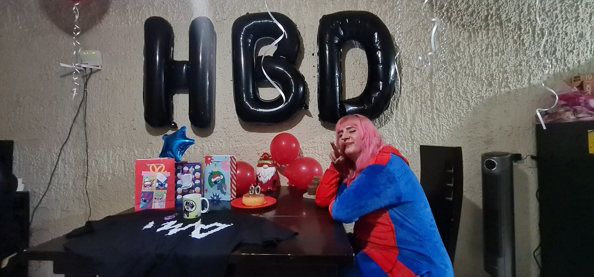
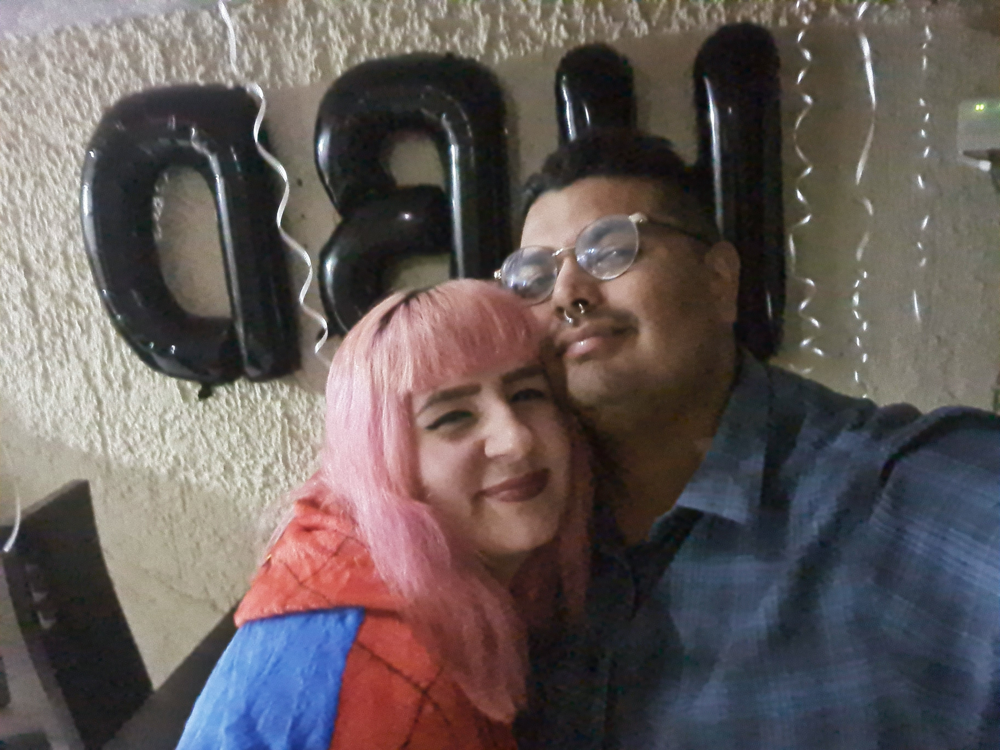
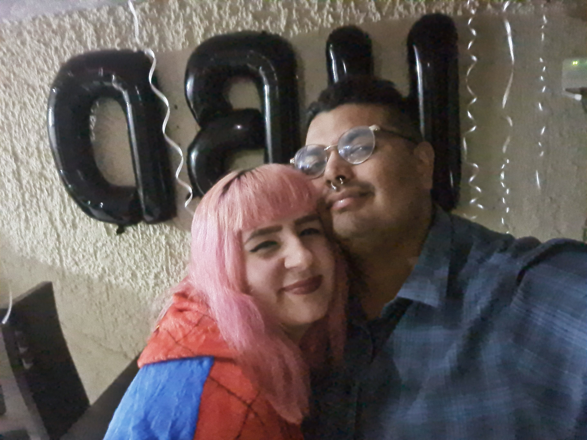

se que desde el momento en que te conoci mi vida comezo a sonar diferente
te volviste lo que siempre espere, toda la ilusion que estaba la hiciste realidad
comenzaste a estar en mis pensamientos, en mis platicas, hablaba de ti en mi clases, y por cosas del canon comenzamos a vernos mas
eran nuestras salidas todo lo que me hace feliz

nuestras noches de ver series, de cenar juntols de platicar de las cosas
todo ha sido genial para mi, las veces donde llegabas cansadas y te dormias mientras te cuidaba

la magia era estar contigo, la magia era estarnos juntos
porque cada cosa que ha sido y que ha pasado la he disfrutado al maximo
eres la cancion que escucho por las mañanas. y sin duda la mejor imagen que puedo ver en las noches amo tu sonrisa, y tu voz, y no quiero perderlas nunca

amo tu sonrisa, y tu voz, y no quiero perderlas nunca

31-12-2024:
porque mientras mas complejo se pone el dia, mas dificil se hacen las cosas, todo parece un rompecabezas, porque armarnos es complejo, porque todo esta dentro de nosotros sin ningun orden, porque parece no tener ninguna figura, pero ahi esta. solo falta que comencemos poco a poco a armar lo que alguna vez estuvo armado, y en ocasiones perdimos.
porque eres la pieza que faltaba en mi vida, eres el significa que no habia tenido, y eres la sonrisa que le da melodia a mis dias, terminemos de armar este rompecabezas, y encontremonos juntos hagamos las cosas que deseamos, y continuemos en el camino
yo se que mi felicidad esta contigo, porque no hay forma en que cuando este contigo no sea feliz
porque encontre el tesoro mas valioso del mundo, una gran mujer, compañera, guerrera, amiga de travesuras, y de mil cosas que faltan